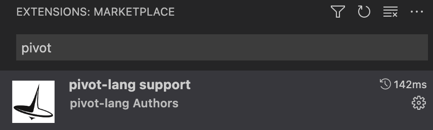

Pivot-lang


此项目目前处于早期开发阶段，不建议用于生产环境。
项目地址
安装
见此处
文档地址
https://lang.pivotstudio.cn
CONTRIBUTING
CONTRIBUTING
中文见此处
欢迎加入社区群
dependencies
重要：如果你想参与开发，请先在项目目录make vm install，然后根据自己是linux还是mac运行make devlinux或者make devmac
特点
- 同时支持aot和jit两种模式
- 极其方便的rust互操作
项目结构
- vm 包含rumtime
- src 编译器源码所在
- internal_macro 内部过程宏
grammar
add_exp =
| mul_exp ("+" | "-" add_exp)?
;
mul_exp =
| unary_exp ("*"｜"/" mul_exp)?
;
unary_exp =
| pointer_exp
| ("-" | "!") pointer_exp
;
pointer_exp = ("&"|"*")* complex_exp;
complex_exp = primary_exp (take_exp_op|array_element_op|call_function_op)*;
take_exp_op = ("." identifier) ;
array_element_op = ('[' logic_exp ']') ;
call_function_op = ("(" (logic_exp (","logic_exp)*)? ")") ;
primary_exp =
| number
| bool_const
| parantheses_exp
| extern_identifier
| struct_init_exp
;
parantheses_exp = "(" logic_exp ")";
number = [0-9]+ ("." number)? ;
identifier = [a-zA-Z_][a-zA-Z0-9_]* ;
extern_identifier = (identifier "::")* identifier ;
bool_const =
| "true"
| "false"
;
compare_exp =
| add_exp (("<=" | "<"｜">="｜">"｜"=="｜"!=") add_exp)*
;
logic_exp =
| compare_exp (("&&"｜"||") compare_exp)*
;
struct_init_exp =
| type_name "{" (struct_init_exp_field ("," struct_init_exp_field)* )? "}"
;
struct_init_exp_field = identifier ":" logic_exp ;
assignee = pointer_exp;
assignment = assignee "=" logic_exp ;
new_variable = "let" identifier "=" logic_exp ;
global_variable = "const" identifier "=" logic_exp ;
if_statement = "if" logic_exp statement_block ("else" if_statement | statement_block)?;
while_statement = "while" logic_exp statement_block ;
for_statement = "for" (assignment | new_variable) ";" logic_exp ";" assignment statement_block;
statement_block = "{" statements "}" ;
impl_block = "impl" extern_identifier "{" function_def* "}" ;
statements = statement* ;
break_statement = "break" ";" ;
continue_statement = "continue" ";" ;
statement =
| assignment ";"
| new_variable ";"
| return_statement
| if_statement
| while_statement
| break_statement
| continue_statement
| complex_exp ";"
;
toplevel_statement =
| struct_def
| function_def
| global_variable
| use_statement ";"
;
program = toplevel_statement* ;
function_def = "fn" identifier "(" (typed_identifier (","typed_identifier)*)? ")" type_name (statement_block | ";") ;
generic_type = "<" type_name ("|" type_name)* ">" ;
generic_type_def = "<" identifier ("|" identifier)* ">" ;
struct_def = "struct" identifier generic_type_def? "{" struct_field* "}" ;
type_name = "*"* extern_identifier ;
typed_identifier = identifier ":" type_name ;
struct_field = typed_identifier ";" ;
return_statement = "return" logic_exp ";" ;
use_statement = "use" identifier ("::" identifier)* ";" ;
Quick Start: A short introduction to the language
重要：Pivot lang尚属于早期开发阶段，可能会经常发生breaking change，因此不建议在生产环境中使用。
本教程将会从安装出发，简单介绍Pivot lang的语法，以及一些基本的使用规则。
Installation
选择你需要的编译模型
Pivot Lang存在两种不同的编译方案：
- 静态编译：编译器会将源码编译成一个可执行文件，能给在操作系统上原生运行
- jit编译：编译器会将源码编译成一个字节码文件，然后在运行时使用编译器指令进行解释执行
目前这两种方案使用的编译器是同一个可执行文件（plc），然而他们在依赖和功能上存在一些差别， 下方是一个简单的对比图：
| jit | 静态编译 | |
|---|---|---|
| 完整的pivot lang功能支持 | ✅ | ✅ |
| 生成可执行文件 | ❌ | ✅ |
| 启动速度 | ❌ | ✅ |
| 依赖llvm | ❌ | ✅ |
| 依赖预编译的pivot lang系统库 | ❌ | ✅ |
| 运行时优化 | ✅ | ❌ |
| 支持debug | ❌ | ✅ |
可以看出，just in time模式的编译器依赖比静态编译少很多，因此如果你不需要debug功能，建议使用jit模式。如果你想要体验完整功能，建议使用静态编译。
Windows
TODO
Linux
目前我们对Ubuntu 20.04 LTS 和 Ubuntu 22.04 LTS提供了apt包。
首先你需要添加我们的apt源的gpg key：
wget -O - https://apt.lang.pivotstudio.cn/public.key | sudo apt-key add -
然后添加我们的apt源：
sudo add-apt-repository "deb [arch=amd64] https://apt.lang.pivotstudio.cn/repo focal main"
sudo add-apt-repository "deb [arch=amd64] https://apt.lang.pivotstudio.cn/repo jammy main"
最后安装pivot lang编译器：
sudo apt install pivot-lang
你可以运行plc来检查是否安装成功。
请重启当前bash或者运行source ~/.bashrc来使环境变量生效。如果想安装AOT功能，请手动下载clang-14，下载方式见此处
MacOS
目前最新版MacOS（非英特尔芯片）上的编译器可以使用homebrew进行安装。
首先你需要添加我们的homebrew tap：
brew tap pivot-studio/tap
然后安装pivot lang编译器：
brew install pivot-lang
安装完成后请按照提示设置环境变量
Docker
TODO
基础项目
项目结构
一个最基础的pivot lang项目由一个配置文件和一个源文件组成。配置文件用于指定项目的一些基本信息，源文件用于编写pivot lang代码。其结构如下：
.
├── Kagari.toml
└── main.pi
配置文件
一个pl项目的根目录必须有一个名为Kagari.toml的配置文件。示例配置文件的内容如下：
entry = "main.pi"
project = "main"
entry指定了该项目的入口文件，即编译器将从该文件开始编译。如果缺少该配置plc将无法编译该项目
源文件
示例项目中的main.pi为源文件。其内容如下：
use std::io;
fn main() i64 {
io::printi64ln(666);
return 0;
}
源文件的后缀名必须为.pi。
在示例中，我们调用了一个系统库重的函数printi64ln，该函数用于打印一个i64类型的值并换行。此源代码编译后执行会输出666。
重要：
printi64ln函数是目前pl runtime中的一个测试用内置函数，此函数可能会在未来移除
编译
如果你已经安装了plc，那么你可以在项目根目录下执行plc main.pi命令来编译该项目。此指令会生成一个名叫out.bc的文件，还有一些中间文件
如果你配置了静态编译环境，还会生成一个叫做
out的文件，该文件是一个可执行文件，可以直接运行 而如果你只有jit环境，该文件不会生成，并且编译命令会输出一个clang报错和两行warning，这是正常现象
jit运行
编译后输入plc run out.bc可以jit运行该项目，其输出结果如下：
666
Visual Studio Code support
我们建议开发者使用Visual Studio Code作为开发工具，因为我们提供了丰富的插件支持。
vsc插件安装
在vsc插件市场搜索pivot-lang support，安装第一个即可

注意：pivot-lang support插件依赖于plc命令，你必须确保plc文件安装路径在环境变量
PATH中
支持功能
-
vsc debug
- 断点
-
变量表
- 函数参数
- 普通变量
- 代码高亮
-
lsp支持
-
错误容忍
- parser错误容忍
- ast错误容忍
-
代码提示
- 普通变量
- 函数参数
- 函数
- 类型
- 模块
-
代码跳转
- 普通变量
- 函数参数
- 函数
- 类型
- 模块
-
引用查找
- 普通变量
- 函数参数
- 函数
- 类型
- 模块
- 语法高亮
-
错误容忍
References
语言功能的参考文档。
Module
模块化
模块的划分和使用
总体来说，pl的模块化与rust类似，但是规则比rust简单。
任何一个pl文件都是一个模块，模块的名字就是文件名。一个pl项目的根目录一定有Kagari.toml配置文件，之后所有该项目
模块的路径都是从该文件所在的目录开始计算的。
举个例子，如果我的pl项目有以下的目录结构：
test
├── Kagari.toml
├── mod1.pi
├── main.pi
└── sub
└── mod.pi
如果main.pi想使用mod1.pi或者mod.pi中的函数，那么可以这样写：
use mod1;
use sub::mod;
fn main() void {
mod1::func();
mod::func();
return;
}
如果mod.pi想使用mod1.pi中的函数，那么可以这样写：
use mod1;
fn main() void {
mod1::func();
return;
}
！！！目前，pl的模块不支持循环引用，循环引用可能导致lsp崩溃。
！！！目前pl引入的所有模块必须对应到相对的pi文件（不能对应目录，也不能单独引入函数），而且不能引入同名的模块。
引用另一个pl项目
目前只支持引用本地的pl项目，引用的方式是在Kagari.toml中添加[deps]
[deps]
sub3 = { path = "sub2" }
使用时，引用的项目模块会在deps中定义的命名空间之下：
use sub3::lib;
fn main() void {
lib::func();
return;
}
Method
method就是隶属于某个结构体的函数，它们与普通函数没有本质区别。
所有的method都必须在impl块里声明，且method都会隐式的有个self参数，该参数是impl类型的指针
为什么pivot-lang的receiver是隐式的？因为我们有gc，所以没必要像rust那样显示的声明receiver类型，统一指针就可以解决几乎所有情况。
可能存在的问题：不方便约束receiver不可变的情况
Method Example
最简单的添加method的例子：
impl pointer_struct {
fn name() void {
io::printi64ln(100100);
return;
}
}
在一个包中，可以定义外部引入的包中结构体的method .
impl mod1::Mod1 {
// xxx
fn name() void {
self.x = 114514;
io::printi64ln(100101);
return;
}
}
调用method的时候，使用<receiver类型>.<method>即可
let a = A{};
a.method();
Compiler
pivot-lang编译器（以下简称编译器）主要由三个部分组成：nom分析器、ast和llvm后端。
Nom parser
nom parser包含了编译器的词法分析和语法分析部分。nom parser的主要功能是使用递归下降法将pivot-lang源代码转换为ast。
AST
AST是抽象语法树的简称，是编译器的中间表示。AST是由nom parser生成的，它是一个树形结构，每个节点都是一个结构体，包含了节点的类型、子节点、行号、列号等信息。
LLVM backend
本编译器使用llvm来生成目标代码，llvm的jit部分会被包含在我们的编译器可执行文件中，然而静态编译不行。因此静态编译相比jit会多一个llvm的依赖。
Parser
parser源代码位置位于src/nomparser目录下，包含了词法分析和语法分析部分。
nom
nom是一个用rust编写的parser combinator库，它不像lr分析器一样提供生成代码的功能，而是 提供一组函数，这些函数可以用来组合出各种parser。
相比于lr分析器，nom的优点是它的parser combinator非常灵活，熟练后可以快速组合出各种parser， 而且可自定义性非常的强，看起来也很直观，相比很多ir生成器的语法并没有复杂多少，但是带来了更好的 语法支持（一般的ir分析生成器的语法定义文件不会有编程语言那么好的语法支持）。
会使用nom是读懂编译器parser代码的重要前提，这里强烈推荐两个nom文档：
parser结构
parser的主要功能是使用递归下降法将pivot-lang源代码转换为ast。如果你不了解递归下降法，可以先看看这篇文章。
对于pivot lang的每一条语法规则，都会在parser里对应一个分析函数，这些分析函数可能会调用其他分析函数，最终最上层的分析函数可以将完整的源代码转换为ast。
pivot lang的完整语法规则见这里
parser最顶层的函数是parse，它接受一个源文件输出一个AST根节点。
#[salsa::tracked(lru = 32)]
pub fn parse(db: &dyn Db, source: SourceProgram) -> Result<ProgramNodeWrapper, String> {
let text = source.text(db);
let re = program(Span::new(text));
if let Err(e) = re {
return Err(format!("{:?}", e));
}
// eprintln!("parse");
Ok(ProgramNodeWrapper::new(db, re.unwrap().1))
}
AST
抽象语法树是目前编译器中最复杂的部分，它是编译器的中间表示，也是编译器的核心。本节将介绍AST的设计和实现。
AST的设计
基本上，所有源代码中的基础单位都会对应抽象语法树中的一个节点。抽象语法树有很多类型的节点，他们可能会相互引用。
所有的节点都必须实现Node trait，这个trait定义了节点的基本行为。
#[enum_dispatch]
pub trait Node: RangeTrait + AsAny {
fn format(&self, tabs: usize, prefix: &str) -> String;
fn print(&self, tabs: usize, end: bool, line: Vec<bool>);
fn emit<'a, 'ctx>(&'a mut self, ctx: &mut Ctx<'a, 'ctx>) -> NodeResult<'ctx>;
}
你可能注意到了，Nodetrait继承了RangeTrait，这个trait定义了节点的位置信息。
#[enum_dispatch]
pub trait RangeTrait {
fn range(&self) -> Range;
}
一般来说，RangeTrait的实现通过#[range]宏来自动生成，你不需要手动实现它。
Node接口中的print函数用于打印节点的信息，它会被用于调试。print打印的结果和tree的输出非常像，你需要用一些工具函数来
格式化输出。以ifnode的print函数为例：
#![allow(unused)] fn main() { fn print(&self, tabs: usize, end: bool, mut line: Vec<bool>) { deal_line(tabs, &mut line, end); tab(tabs, line.clone(), end); println!("IfNode"); self.cond.print(tabs + 1, false, line.clone()); if let Some(el) = &self.els { self.then.print(tabs + 1, false, line.clone()); el.print(tabs + 1, true, line.clone()); } else { self.then.print(tabs + 1, true, line.clone()); } } }
emit函数是生成llvm代码的核心，它会调用llvm api构造自己对应的llvm ir。在编译的时候，最上层节点的emit会被调用，
该函数会递归的调用自己的子节点的emit函数，最终生成整个程序的llvm ir。
下方是ifnode的emit函数：
fn emit<'a, 'ctx>(&'a mut self, ctx: &mut Ctx<'a, 'ctx>) -> NodeResult<'ctx> {
let cond_block = ctx
.context
.append_basic_block(ctx.function.unwrap(), "if.cond");
let then_block = ctx
.context
.append_basic_block(ctx.function.unwrap(), "if.then");
let else_block = ctx
.context
.append_basic_block(ctx.function.unwrap(), "if.else");
let after_block = ctx
.context
.append_basic_block(ctx.function.unwrap(), "if.after");
ctx.builder.build_unconditional_branch(cond_block);
position_at_end(ctx, cond_block);
let condrange = self.cond.range();
let (cond, pltype, _) = self.cond.emit(ctx)?;
if pltype.is_none() || !pltype.unwrap().borrow().clone().is(PriType::BOOL) {
return Err(ctx.add_err(condrange, ErrorCode::IF_CONDITION_MUST_BE_BOOL));
}
let cond = ctx.try_load2var(condrange, cond.unwrap())?;
let cond = ctx.builder.build_int_truncate(
cond.into_int_value(),
ctx.context.bool_type(),
"trunctemp",
);
ctx.builder
.build_conditional_branch(cond, then_block, else_block);
// then block
position_at_end(ctx, then_block);
let (_, _, then_terminator) = self.then.emit(ctx)?;
if then_terminator.is_none() {
ctx.builder.build_unconditional_branch(after_block);
}
position_at_end(ctx, else_block);
let terminator = if let Some(el) = &mut self.els {
let (_, _, else_terminator) = el.emit(ctx)?;
if else_terminator.is_none() {
ctx.builder.build_unconditional_branch(after_block);
}
if then_terminator.is_return() && else_terminator.is_return() {
TerminatorEnum::RETURN
} else {
TerminatorEnum::NONE
}
} else {
ctx.builder.build_unconditional_branch(after_block);
TerminatorEnum::NONE
};
position_at_end(ctx, after_block);
if terminator.is_return() {
ctx.builder.build_unconditional_branch(after_block);
}
Ok((None, None, terminator))
}
emit函数的参数是节点自身，第二个参数是编译上下文。编译上下文中会包含一些需要透传的信息，比如符号表，llvmbuilder，lsp参数等。
打印AST结构
plc命令行工具有打印ast的功能，你可以使用plc xxx.pi --printast命令来打印ast结构。
下方是一个ast打印结果的样例：
...
file: /Users/bobli/src/pivot-lang/test/sub/mod.pi
ProgramNode
└─ FuncDefNode
├─ id: name
├─ TypeNameNode
│ └─ ExternIDNode
│ └─ VarNode: void
└─ StatementsNode
└─ RetNode
file: /Users/bobli/src/pivot-lang/test/mod2.pi
ProgramNode
├─ UseNode
│ ├─ VarNode: sub
│ └─ VarNode: mod
├─ FuncDefNode
│ ├─ id: test_mod
│ ├─ TypedIdentifierNode
│ │ ├─ id: args
│ │ └─ TypeNameNode
│ │ └─ ExternIDNode
│ │ └─ VarNode: i64
│ ├─ TypeNameNode
│ │ └─ ExternIDNode
│ │ └─ VarNode: void
│ └─ StatementsNode
│ └─ RetNode
└─ StructDefNode
├─ id: Mod2
└─ TypedIdentifierNode
├─ id: y
└─ TypeNameNode
└─ ExternIDNode
└─ VarNode: bool
...
Language Server
Pivot Lang的Language Server（以下简称LSP）是一个用于为编译器提供语法支持的组件，它同时被用于在编译期间生成诊断信息。
基本上，lsp能够为所有的现代代码编辑器提供服务，但是目前我们只为vsc提供官方支持。如果想在别的编辑器中使用lsp，可能需要自己写一个 简单的客户端插件。
Diagnostic
诊断信息是个非常重要的功能，它可以帮助我们在编写代码的时候发现错误和可能有问题的地方，从而提高我们的编码效率。
为了让用户体验尽可能的好，我们的lsp分析需要尽量容忍用户的错误输入，尽可能多的分析出用户代码中的问题
Fault Tolerance
错误容忍是生成好的诊断信息的前提。在pivot-lang的中，我们分别在两个层面上实现了错误容忍：
- parser
- ast
Parser的错误容忍
nom parser架构中，如果出现了一个无法被识别的语句，整个分析器就会终止分析输出错误。这对于错误容忍的要求来说是无法被接受的。所以 我们的编译器不使用nom parser的默认错误处理机制，任何parser阶段产生的nom error都应该被视作bug，我们应该尽可能的避免这种情况。
在parse过程中，如果一些错误语句能非常明显的被识别为一个语法的未完成项（且没有歧义），我们应该将它识别为该语法类型的Node，并且在Node上加一个
flag标识它不完整（常常是is_complete），这样在ast阶段我们就能输出对应的诊断信息。
对于最常见的基础语法单位statement和top_statement，parser提供了一个helper函数except，能够在遇到不可被识别的错误语句的时候
将该“块”语句识别为ErrNode，以方便后续的分析正常进行。
！！！注意：ErrNode虽然很好用，但是它只能输出很宽泛的诊断信息（比如无法识别该语句），它是最后的错误容忍手段，应该尽量避免使用它
AST的错误容忍
由于parse阶段的时候能够容忍错误的语句，对于一些语法错误，ast节点只需要检查自身的完整性就能够输出诊断信息了。而对于语义错误（例如类型不匹配），我们需要在ast阶段
进行分析并获取结果。这些操作目前是在各个节点的emit函数里进行的。所有的emit函数都返回NodeResult类型，如果该节点的emit中出现了错误，
分析将会中断，其对应的错误信息会被添加到ctx（编译上下文）中并且作为error返回。上层函数如果遇到自己依赖的函数报错一定不能重复添加该错误至ctx中，
否则会导致错误信息重复输出。上层函数处理自己的依赖报错有两种情况：
- 直接停止分析并将该错误传递给自己的上级
- 忽略该错误继续进行分析
一般来说，大部分的expression和statement都会采用第一种方案，而statement block则会采用第二种方案
SystemLib
pl的系统库一部分是pl代码一部分是rust代码，rust部分在项目的vm目录中，pl部分在planglib目录中。
VM
放rust写的给pivot-lang使用的函数
所有导出的函数需要加#[is_runtime]，所有导出结构体需要加#[repr(C)]
JIT invalid memory access issue
在jit模式下使用runtime函数可能会出现invalid memory access错误，
这个问题本质是rust编译的时候会优化掉不使用的module，导致jit时找不到对应runtime函数。所以建议每个
mod加一个叫做reg的函数，里边必须用到你会使用的所有结构体，这样在需要jit测试的时候调用使用模块的reg函数，对应代码就不会被优化掉了。
使用is_runtime导出rust函数
一个被is_runtime标记的rust函数在编译到静态库之后，在pivot-lang中声明对应的函数，即可像正常函数一样调用。例如：
Rust:
#![allow(unused)] fn main() { #[is_runtime] fn printi64ln(i: i64) { println!("{}", i); } }
Pivot Lang:
fn printi64ln(i: i64) void
fn main() void {
printi64ln(1)
return
}
！！！注意事项：
is_runtime标记的函数不能有modifier（比如pub，unsafe），但是被is_runtime标记的impl块中的函数不受此限制。struct MyStruct; #[is_runtime("struct")] impl MyStruct { pub fn myfunc1() { // ... } }标记impl块时，导出的函数名称会变为
{structname}__{fnname}的形式，函数允许使用receiver。更多高级用法参见is_runtime的rust doc
GC
pivot-lang 是一门使用gc进行内存管理的语言。
pivot-lang 的gc目前是使用rust写的，采用非常简单的 mark and sweep 算法。
栈变量采用shadow stack模式进行追踪。
目前gc的源代码在vm项目中
目前的gc非常简单，也没做任何优化，属于能用就行。总代码量也很少，欢迎为我们改进它。
Shadow Stack
pl的gc目前是精确gc，编译器会插入指令以让gc运行时能知道gcroot有哪些。gc记录的gcroot列表就是shadow stack。
在mark阶段，gc会从shadow stack开始扫描。
planglib
planglib目录下的每一个文件夹都是一个系统模块，在编译的时候会自动被加入依赖中，不需要在配置文件中特殊配置。
planglib如何在编译期间被找到
plc编译器在编译时会试图寻找KAGARI_LIB_ROOT环境变量，并且将该变量视为planglib的根目录
不设置或错误设置
KAGARI_LIB_ROOT环境变量可能导致无法进行编译或者代码分析
如果你是plang开发者，你可以手动在~/.bashrc或者~/.bash_profile中加入以下代码：
export KAGARI_LIB_ROOT=<pivot-lang project path>/planglib
为Pivot Lang贡献代码
非常感谢您愿意对本项目提供帮助！
下方是对您为 pivot-lang 贡献代码的一些帮助
如果您刚开始了解pivot-lang项目，可以加入我们的社区 qq 群 向我们提问.
因为本项目还处于早期阶段: 本页面的指导很可能会在未来有更改，欢迎帮助我们改进此页面！
基础
开源协议
本项目使用 MIT 协议。对本项目贡献代码即表示您同意您的更改遵守该协议。
您能做的事情
Issues
我们有很多的已有的issue，在添加新功能的时候我们也会添加相关的issue。如果您发现我们的bug或者有什么需求，欢迎新建 issues 来告诉我们。您也可以看一些 open 的issue并且参与讨论或者贡献代码帮助修复它。
Code
非常欢迎帮助我们实现新功能。我们的新功能实现分为几个阶段：
- 提出，讨论需求的合理性和必要性
- 讨论实现方案
- 实现
- reveiew
- 合并
一些简单的需求可以跳过第二个阶段，所有超过第一个阶段的需求都会被放在我们的project中。如果您想帮助实现 已有需求，请去此页面寻找处于new或者ready状态的项目。如果您想实现一个新的需求，请先在issues中提出，最好加入 qq群 和我们一起讨论方案，在讨论决定通过后，我们会在project中添加一个新的对应项目。
Tests
强烈建议在提交修改的时候同时添加对应的测试，帮助我们将测试覆盖率保持在 85%, 帮助我们进一步完善测试也是相当欢迎的。
请在提交pr前确认自己的修改能通过所有的测试(通过运行 cargo test --all)
Benchmark
目前我们还没有基准测试，欢迎帮助我们添加基准测试。
文档
参见 文档 网站。对应源码在 book 目录中，欢迎帮助我们完善文档。
风格
Issue 风格
请在提出issue时提供至少三个小自然段的说明，包括：你想干什么，遇到了什么问题，如果复现这个问题等。
如果可能的话，希望您能提供:
- 如歌是在使用的时候遇到的bug，最好有一小段代码或者一个指向 gist 的链接，其中包含能复现问题的代码。
- 完整的 backtrace, 如果是进程崩溃相关的问题。
- 一个示例项目，如果是编译相关的问题。
代码风格
rust代码风格通过使用 rustfmt 进行统一 请尽量减少代码重复率，增加可读性。
为了避免不同的rust小版本格式化的区别，请使用以下命令格式化: cargo +stable fmt